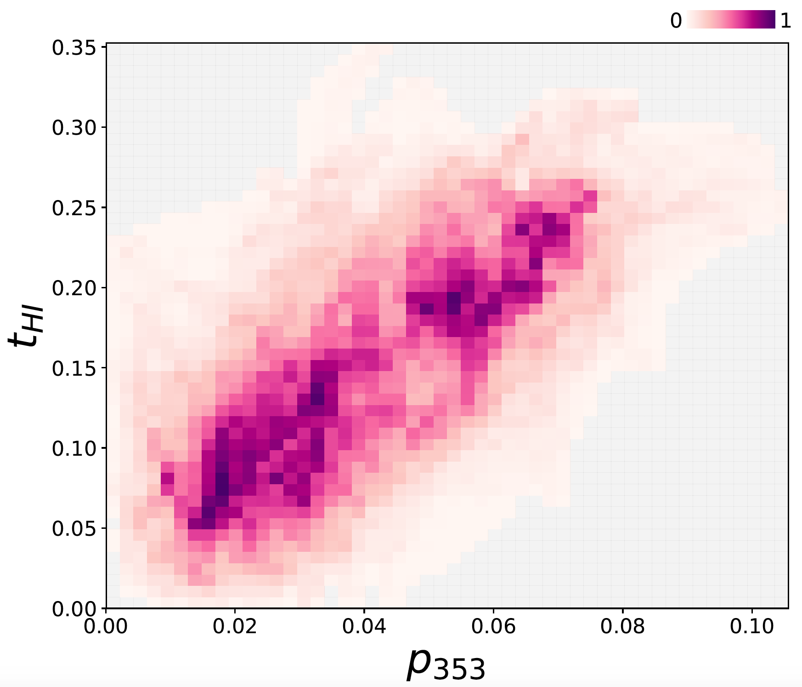

I'm Susan Clark,
a postdoctoral fellow
at the Institute for Advanced Study in Princeton.
Research
I study magnetic fields, magnetohydrodynamic processes, and the interstellar medium. I tackle these complex systems with a combination of observation, simulation, and analytic theory.
The physical nature of neutral hydrogen intensity structure
Much of the interstellar turbulence literature holds that structure in narrow channel maps of the 21-cm neutral hydrogen line is predominantly an imprint of the turbulent velocity field, and unrelated to three-dimensional density structure. We show that this "velocity caustic" interpretation is incorrect. Instead, we find that small-scale channel map structure is preferentially cold-phase gas. These cold structures are anisotropic and elongated in the direction of the local magnetic field.

Small-scale HI channel map structure is cold
Using high-resolution GALFA-H I observations and 50,985 quasar spectra from SDSS, we measure the equivalent widths of interstellar Na I D1 and Na I D2 absorption, and robustly conclude that they depend more strongly on the column density of small-scale structure in HI than on either the large-scale HI structure or the total HI column. This is inconsistent with the hypothesis that small-scale channel map structure is driven by velocity crowding. Instead, the data favor the interpretation that this emission structure predominantly originates in cold, dense interstellar material, consistent with a clumpy cold neutral medium.

Tangled magnetic fields
The degree of disorder of neutral hydrogen features as a function of velocity traces the dust polarization fraction. The shape information in neutral gas is a probe of line-of-sight magnetic field tangling.

The magnetorotational instability
I analytically investigate how the magnetorotational instability (MRI) saturates using weakly nonlinear analysis. I compare this theory work with simulations using Dedalus, a powerful pseudospectral code.

MRI in Taylor-Couette Flow
I use techniques from pattern formation theory to derive the evolution of MRI-unstable flows on long spatio-temporal scales. I compare the saturated state behavior for the standard and helical MRI.
Magnetically Aligned HI Fibers
Linear features in diffuse neutral hydrogen are aligned with the interstellar magnetic field, a result we discovered using GALFA-HI. I investigate this surprisingly tight coupling to better understand the multiscale physics that shapes the diffuse interstellar medium.
The Rolling Hough Transform (RHT)
I wrote a machine vision algorithm to quantify linearity as a function of direction. This code enables us to measure the orientation of structures in the image plane.
RHT code
HI shape traces dust polarization angle
Neutral hydrogen structures are so well aligned with the magnetic field that HI orientation can be used to create higher fidelity maps of the Galactic polarized dust foreground.
Selected Papers
Mapping the Magnetic Interstellar Medium in Three Dimensions Over the Full Sky with Neutral Hydrogen S.E. Clark & Brandon S. Hensley. 2019, ApJ 887, 2.
The physical nature of neutral hydrogen intensity structure S.E. Clark, J.E.G. Peek, M.-A. Miville-Deschênes. 2019, ApJ 874, 171
A new probe of line-of-sight magnetic field tangling S.E. Clark. 2018, ApJL 857, L10
The weakly nonlinear magnetorotational instability in a local geometry S.E. Clark & J.S. Oishi. 2017, ApJ 841, 1
The weakly nonlinear magnetorotational instability in a global, cylindrical Taylor-Couette flow S.E. Clark & J.S. Oishi. 2017, ApJ 841, 2
Neutral Hydrogen Structures Trace Dust Polarization Angle: Implications for CMB Foregrounds S.E. Clark, J. Colin Hill, J.E.G. Peek, M.E. Putman, B.L. Babler. 2015, PRL 115, 241302. *Selected as a PRL Editors' Recommendation.*
Magnetically Aligned HI Fibers and the Rolling Hough Transform
S.E. Clark, J.E.G. Peek, M.E. Putman, 2014, ApJ 789, 82
Curriculum Vitae
I did my B.S. in Physics at UNC-Chapel Hill on a Morehead-Cain scholarship, where I worked with Fabian Heitsch on simulations of high-velocity clouds.
I was an NSF Graduate Fellow at Columbia University, advised by Mary Putman and Josh Peek. I received my Ph.D. in June 2017, with a dissertation on magnetic fields in the interstellar medium.
I am currently a NASA Hubble Fellow at the Institute for Advanced Study in Princeton.
Contact
seclark@ias.edu
School of Natural Sciences Institute for Advanced Study 1 Einstein Drive Princeton, New Jersey 08540